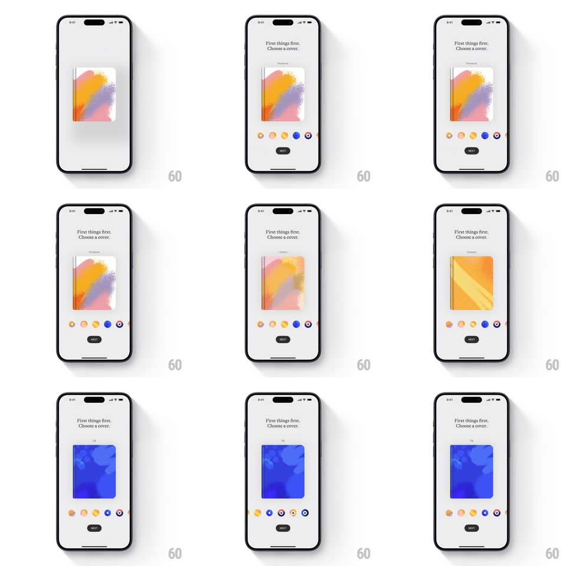

Media
Frame-by-frame

Rebuild this interaction 1:1: Lake's journal cover picker - a "First things first. Choose a cover." screen where a centered journal preview crossfades fluidly between artwork covers as you swipe the horizontal color-dot picker beneath it, the selected dot ring-highlighting in sync.

Rebuild this interaction 1:1: Lake's journal cover picker - a "First things first. Choose a cover." screen where a centered journal preview crossfades fluidly between artwork covers as you swipe the horizontal color-dot picker beneath it, the selected dot ring-highlighting in sync. ## Integration Integration: stack-agnostic spec - springs given as stiffness/damping, timed motions as duration + curve; map every value to your framework and animation library of choice. ## Scene Off-white screen: title "First things first. Choose a cover.", centered journal book preview (standing cover with soft drop shadow), a horizontal row of circular color/artwork swatches below it, and a dark Next pill button. Preceded by the store's "Coloring Journal" product card. ## Motion spec Pattern: swipe picker with artwork crossfade. - Swipe the swatch row: it scrolls with momentum and decelerates (standard scroll physics), snapping to center the nearest swatch (spring ~360/28, 300ms). - The centered swatch gets a ring outline (scale 1 -> 1.15 with the ring, 200ms) and the journal preview crossfades to its artwork (350ms ease-out) with a slight cover tilt (+/-4deg rotateY during the swap) like the book is being turned. - Tap a swatch: the row scrolls it to center (spring ~360/28, 350ms) and the same crossfade plays. - The journal shadow shifts subtly with the tilt (offset follows rotateY). ## Calibration - The crossfade is artwork-only - the book's white page edges and shadow stay constant, grounding the swap. - Selection ring color matches the artwork's dominant hue. ## Reduced motion Artwork swaps with a 250ms fade, no tilt. ## Don't miss - The book preview is a 3/4 standing render, not a flat square - keep the spine edge visible. - Swatches are circular crops of the actual artwork, not flat color chips.